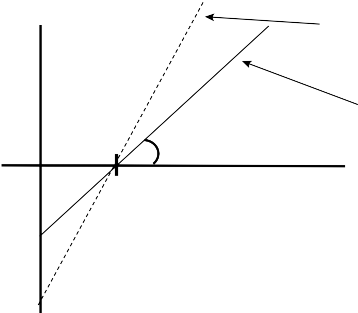

total return
3. May increase to l · , where l is 3. Will magnify negative ’s as well as l ·
the leverage ratio
4. Enhances the market returns of 4. May cause huge losses in the portfolios market timers of market timers
tives, such as REPOs, futures, forwards, equity swaps, and option contracts, which require smaller margin requirements than equities and allow for even higher leverage of the portfolio for a given amount of equity capital. Finally, a portfolio manager can achieve leverage by shorting securities. In this chapter we discuss how to leverage skillfully. We explain practical methods for increasing the leverage of a portfolio primarily through the use of index futures and single-stock futures. We cover several portfolio situations, including that of an index portfolio manager and that of an active portfolio manager attempting to leverage an equity portfolio with a positive . We also discuss issues related to rebalancing a levered portfolio and protecting against unlimited losses.
The easiest way to leverage an equity portfolio is to use futures contracts on equity indices such as the Standard & Poor’s (S&P) 500 Index futures, the NASDAQ 100 Index futures, the Russell 2000 Index futures, and the S&P 400 Index futures.4 Table 12.2 shows the

4 Futures capital gains and losses are treated differently from other investments for individual investors. In particular, all futures gains and losses are treated as 60% long-term gains and 40% short-term gains regardless of the time of purchase and sale. This can amount to quite a bit for short-term trades. For example, a short-term trade with futures would result in a tax burden of 23% with futures compared with a tax burden of 35% with stocks for the top marginal tax rate individual using the individual tax rates of 2006.
T A B L E 1 2 . 2
Commonly Used Domestic Equity Futures Contracts
Futures Name | Ticker | Exchange | Contract Size | Index Value | Initial Margin ($) | Maintenance Margin ($) | Margin (%) | Volume | Relative Liquidity (% of Total) |
S&P 500 | SP | CME | 250 | 1,181.27 | 19,688 | 15,750 | 6.67 | 38,224 | 13.37 |
S&P 500 E-mini | ES | CME | 50 | 1,181.27 | 3,938 | 3,150 | 6.67 | 772,364 | 54.02 |
NASDAQ 100 | ND | CME | 100 | 1,519.63 | 18,750 | 15,000 | 12.34 | 12,722 | 2.29 |
NASDAQ 100 E-mini | NQ | CME | 20 | 1,519.63 | 3,750 | 3,000 | 12.34 | 358,677 | 12.91 |
NASDAQ Comp E-mini | QCN | CME | 20 | 2,062.41 | 4,500 | 3,600 | 10.91 | 0 | 0.00 |
S&P 400 Mid-Cap | MD | CME | 500 | 645.97 | 16,875 | 13,500 | 5.22 | 324 | 0.12 |
S&P 400 Mid-Cap E-mini | ME | CME | 100 | 645.97 | 3,375 | 2,700 | 5.22 | 18,039 | 1.38 |
S&P 600 Small-Cap | SMC | CME | 200 | 321.11 | 3,500 | 2,800 | 5.45 | 13 | 0.00 |
Russell 2000 | RL | CME | 500 | 624.02 | 16,875 | 13,500 | 5.41 | 1,265 | 0.47 |
Russell 2000 E-mini | ER2 | CME | 100 | 624.02 | 3,375 | 2,700 | 5.41 | 111,074 | 8.21 |
Russell 1000 | RS | CME | 100 | 633.99 | 3,625 | 2,900 | 5.72 | 963 | 0.07 |
S&P 500 Barra Growth | SG | CME | 250 | 565.12 | 10,000 | 8,000 | 7.08 | 4 | 0.00 |
S&P 500 Barra Value | SU | CME | 250 | 603.87 | 9,688 | 7,750 | 6.42 | 11 | 0.00 |
Financial SPCTR | FIN | CME | 125 | 401.564 | 2,375 | 1,900 | 4.73 | 0 | 0.00 |
Technology SPCTR | TEC | CME | 125 | 329.547 | 1,750 | 1,400 | 4.25 | 0 | 0.00 |
DJIA | DJ | CBOT | 10 | 10,489.94 | 5,000 | 4,000 | 4.77 | 7,468 | 0.93 |
DJIA E-mini | YM | CBOT | 5 | 10,489.94 | 2,500 | 2,000 | 4.77 | 100,410 | 6.24 |
352
352
352
Note: Margin requirements differ for speculators and exchange members and for hedging purposes. We listed the requirements for speculators, which are the highest margin rates, as of January 31, 2005. The futures contract data were obtained from the respective futures exchanges, www.cme.com and www.cbot.com. The index values are closing prices on January 31, 2005, obtained from Bloomberg, finance.yahoo.com, and www.standardandpoors.com. The tickers are also Bloomberg tickers, except for SMC, which is GN in Bloomberg. The relative liquidity measures the percentage of ADV (average daily trading volume) in dollar terms for the month of January of that particular contract relative to the other contracts in the table. For instance, 54% of the total dollar trading volume of those listed contracts occurred with the S&P 500 E-mini contract. Another good source of liquidity is to look at the time and sales reports of each contract. The margin percentage was computed by dividing the initial margin requirements by the size of one contract using closing prices of the index for January 31, 2005.
relative monthly trading volume of these and other types of futures contracts, which gives a sense of their relative degree of liquidity. The S&P 500 Index futures and the NASDAQ 100 Index futures are the most liquid futures contracts available.
In this section we discuss leveraging with equity index futures. The discussion applies mainly to managers whose benchmarks are common equity indices with actively traded futures contracts. We first discuss the magnitude of possible leverage and then examine the practical mechanics.
12.2.1 Theoretical Limits of Leverage
The amount of leverage to add to a portfolio varies with the goals of the manager. Leverage is conventionally measured as the total absolute value of all investment positions divided by the equity capital. Thus, if a manager were long $100 M of futures and short another $100 M of index futures, the conventional measure of leverage would be 2. In this chapter, we use an alternative defini- tion of leverage which could also be thought of as net dollar exposure. That is, in our definition, the manager in the preceding example would have a leverage or exposure of 0. In this chapter, we use leverage mainly to refer to futures positions that increase the net exposure of the underlying portfolio position. In these cases, our formula for leverage coincides with the conventional for- mula for leverage. When futures are shorted with an underlying long position, our definition of leverage is no longer the conven- tional definition of leverage. Thus when considering long positions combined with short positions, our definition of leverage is more commonly known as the net dollar exposure. We will use the symbol l to illustrate the desired amount of leverage with respect to the underlying equity capital of the portfolio. Leverage at time t will be given by the expression l = Vf/V , where Vf is the total
t t t
notional value of the futures positions, and Vt is the total equity capital. Thus l = 1 represents an exposure equal to 100% of the invested capital and hence no leverage, while l = 2 represents a 200% exposure to the equity capital.
In the simple case of cash and index futures, leverage affects the portfolio manager’s return primarily by increasing its exposure to the market, its benchmark . To achieve a certain benchmark for the portfolio, one needs to compute the appropriate number of futures contracts to purchase. The portfolio manager is limited by
354 PART III: Mojo

the extent of the margin requirements of the underlying contract. Table 12.2 gives a summary of the percentage requirements of some major futures contracts as of January 2005.
Let us use mf to denote the margin percentage requirement for every dollar of futures positions acquired. Theoretically, the highest leverage that could be obtained is
l max 1
mf
(12.2)
The of the portfolio is simply the of the futures contract multiplied by the leverage ratio.5 Thus the highest that can be achieved is
max f
mf
where f is the of the futures contract.6
(12.3)
Suppose that the benchmark is the S&P 500 Index. If the mar- gin requirement on the S&P 500 futures is 5%, then the maximum leverage that can be achieved is 20 (= 1/mf ). This is also equal to the maximum that can be achieved because the S&P 500 futures have a f= 1 when the benchmark is the S&P 500. At that rather high exposure to the S&P 500, if the S&P 500 had a —4% return, the portfolio would lose approximately —80% (= —4l max).
12.2.2 Leverage Mechanics
Although very high levels of leverage theoretically can be achieved in an equity portfolio, rarely do portfolio managers maintain a

5 Throughout this chapter, when we refer to , we are referring to the of the respective instrument versus the benchmark. For portfolio managers who are more accustomed to using with respect to the market (i.e., the S&P 500), one simply need interpret all our ’s as the versus the S&P 500. If one does this, in all cases the overall of the portfolio will be with respect to the S&P 500, irrespective of the benchmark. Of course, if the benchmark is the S&P 500, the resulting also will mean a similar thing. The key is that all the measured ’s are, with respect to one underlying instrument, either a benchmark or a market index.
6 Since l Vf/V , the maximum leverage is achieved when all the equity capital is just
t t
sufficient to cover the margin requirements, that is, when mVf = V . Substituting
t t
this into the equation results in the maximum leverage ratio. The of the portfolio is given by P = wf , where w is the weight on the futures position. Since we want the maximum , we will create the maximum leverage on that particular futures contract of 1/mf , which by substitution leads to the max.
leverage ratio higher than two or three.7 There are many reasons for this. Higher amounts of leverage put the portfolio at greater risk of vanishing entirely with a significant adverse market move- ment. For mutual funds, the Securities and Exchange Commission (SEC) has to approve the leverage amount in the prospectus, and it may be very uncomfortable with leverage ratios above two or three. For these practical reasons, we will focus on leverage ratios within a moderate range, but the formulas apply to any sort of leverage up to the theoretical maximum.
N
N
N
In order to construct a portfolio of a given with cash and futures, we can use a formula that describes the of the overall portfolio:
P wii
i1
(12.4)
where P is the of the overall portfolio, i represents the of the instrument i, and wi represents the weight of instrument i in the port- folio. The weights are calculated relative to equity capital V so that the sum of the weights of noncash positions is l. The preceding equa- tion just states the relationship that the of the overall portfolio is a weighted average of component portfolio ’s. The of cash is equal to 0 and drops out of the equation. Since we are using just cash and futures, we are left only with the weight of the futures contracts and the of the futures. We denote the of the futures as f .
In order to find the number of contracts that we need to pur-
chase to achieve a given target , denoted by *, we must satisfy the following equation:
wf f
N f qSt
Vt f
(12.5)

7 William Seale, CIO of Profunds, was one of the pioneers of high-leverage mutual-fund investing, helping to create one of the first mutual funds with a of 2. There used to be a regulation by the Commodities and Futures Trading Commission (CFTC) that did not allow more than 5% in initial margin on futures positions. Bringing together former equity regulators, former futures regulators, and traders, Seale’s fund found a legal loophole that allowed the fund to get around the margin restriction and leverage the portfolio to = 2. At the time, many people claimed that that level of leverage was mathematically and legally impossible. Clearly, they knew neither the law nor the mathematics. A few years ago, the CFTC dismantled most of its margin regulations, and leveraging is less complicated today.
356 PART III: Mojo

where Nf is the number of futures contracts purchased, q is the futures contract multiplier (e.g., q = 250 for the S&P 500 futures contract), and St is the value of the index underlying the futures contract at time t (e.g., the S&P 500 Index value).8 By rearranging this equation, we obtain the standard formula to determine how many futures contracts should be purchased to achieve a given *:
Vt

N f
f qSt
(12.6)
Suppose that the benchmark is the S&P 500 and that the port- folio manager is purchasing S&P 500 futures. To achieve a portfo- lio of * = 2, given an S&P 500 Index trading at 1000, a multiplier for the large S&P 500 contracts of 250, and a sum of cash equal to
$100 million, the appropriate number of futures contracts to pur- chase would be 800. (The of the S&P 500 futures with respect to S&P 500 index is 1.)
When the portfolio manager purchases Nf contracts of the futures, it “costs” him or her qNf Ft dollars, where Ft is the price of a futures contract. Then the portfolio manager needs to keep (qNf Ft)mf dollars in a margin balance and hold the rest of the equity capital in cash earning interest. The general formula for the amount of cash held is Vt - (qNf Ft)mf .
In our example, the margin amount is $10,075,282 (the product
of q = 250, Nf = 800, Ft = 1007.53, mf = 0.05), and the cash portion of the portfolio is $89,924,718 (= $100,000,000 - $10,075,282).
12.2.3 Expected Return and Risk
In general, the return of the futures contracts, rf , can be expressed as f + f rB + Ef , where rB is the benchmark return. Given the lever- age ratio of l, the expected return and risk of the total portfolio
becomes
E(rP) = l (f + f B) (12.7)
f
f
f
B
B
B
f
f
f
V(rP) = l2 [ 2 2 + 2] (12.8)

8 For those unfamiliar with trading futures contracts, these terms might look odd. Every futures contract represents the value of an underlying portfolio. Thus, when buying one futures contract, it is contract to buy 1 . q. St of the underlying index portfolio at
a future date. Thus if one buys Nf contracts, one is agreeing to buy Nf . q . St worth of
a portfolio with equal composition to the underlying index at a future date.
where (12 is the residual risk of the futures contract,
is the mean
f B
B
B
B
return of the benchmark, and 2 is the variance of the benchmark return. This clearly shows that although leverage can increase the expected return of the portfolio, it also increases proportionately the risk of the portfolio. In the case of leveraging by purchasing futures contracts on the benchmark itself, f = 1 and f = 0 (or close to it), and we can ignore the Ef because it will be very small. In this particular case, if we assume that the portfolio and futures returns already have subtracted the risk-free rate, the Sharpe ratio (SR) of the overall portfolio is equal to
SRP
B

B
(12.9)
In this particular case, the Sharpe ratio is independent of the degree of leverage, and the of the total portfolio equals the leverage ratio.9
Most portfolio managers also earn interest on the margined amount minus a small “haircut”. On the margined sum, one can assume that the manager will receive something like 98% of the short-term interest rate for cash. Throughout this chapter we will use i to denote the interest rate on the cash position and i to denote the interest rate on the margin. We expect that i > i owing to the haircut. In all our calculations for the expected return of the portfolio, we shall ignore the cash returns of the position for sim- plicity. However, cash returns are not trivial, especially when the portfolio manager has a substantial amount of cash in his or her overall portfolio.10

9 In the case of cash and futures only, l = Vf/V . Thus, to achieve a desired leverage ratio
t t
l*, the portfolio manager solves l* = (Nf, t qSt)/Vt for the number of contracts to purchase. Thus, Nf,t = (l* Vt)/qSt. This is equivalent to the * formula when f = 1.
The leverage ratio in this chapter uses the translation of Vf = N qS , which is
t f,t t
known as equal-position matching. Some investment professionals prefer to define the leverage ratio in terms of dollar matching, where the spot price of the underlying contract would be replaced with the actual price of the futures contract.
10 For those interested, all the expected-return calculations in this chapter can be modified to include the amount held in cash by adding the term · rcash, where is the proportion of equity held in cash. In the case of cash and index futures, = 1; it changes in other sections of this chapter. Using notation employed later in this chapter and continuous compounding, the additional cash term can be expressed as (It,t + k — 1), where
mqN f ,t i' k i k
i k
It,tk V
e 360 e 360 e 360
t
If there is no haircut on margin or if margin is covered by the other means, let i = i
or let m = 0.
F I G U R E 1 2 . 1

Portfolio payoffs with and without leverage.

V(t)
Payoff with 2x leverage